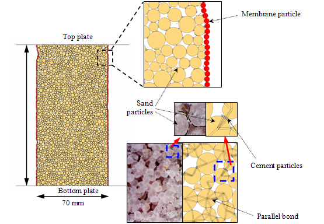

Please view this page on PC or Tablet.
Wave-Based Characterizations – Using Mechanical Wave True Traxial Box and Bender Element Sets

Publications
- Wang, Y.H., Yan, W.M., and Lo, K.F. (2006). “Damping ratio measurements by the spectral ratio method, Canadian Geotechnical Journal, Vol. 43, No. 11, pp. 1180-1194.
- Wang, Y.H., Lo, K.F., Yan, W.M., and Dong, X. (2007). “Measurement biases in the bender element test,” Journal of Geotechnical and Geoenvironmental Engineering, ASCE, Vol. 133,No. 5. pp. 564-574.
- Wang, Y.H., Mok, C.M.B. (2008). “Mechanisms of small-strain shear-modulus anisotropy in soils, Journal of Geotechnical and Geoenvironmental Engineering, ASCE, Vol. 134, No. 10, pp. 1516-1530.
- Gao, Y., Wang, Y.H., and Su, J.C.P. (2013). “Mechanisms of aging-induced modulus changes in sand under isotropic and anisotropic loading,” Journal of Geotechnical and Geoenvironmental Engineering, ASCE, Vol. 139, No. 3, pp. 470-482.
- Wang, Y.H., Gao, Y., and Ooi, G.L. (2015).“Experimental characterizations of an aging mechanism of sands,” Journal of Geotechnical and Geoenvironmental Engineering, ASCE, Vol. 142, No. 2, DOI: 10.1061/(ASCE)GT.1943-5606.0001413.
Resonant Column Testing
Publications
- Wang, Y.H. and Siu, W.K. (2006). “Structure characteristics and mechanical properties of kaolinite soils. II. Effects of structure on mechanical properties, Canadian Geotechnical Journal, Vol. 43, No. 6, pp.601-617.
- Wang, Y.H. and Santamarina, J.C. (2007). "Attenuation in sand - an exploratory study on the small-strain behavior and the influence of moisture condensation," Granular Matter, Vol. 9, No. 6, pp. 365-376.
- Wang, Y.H. and Tsui, K.Y. (2009). “Experimental characterization of dynamic property changes in aged sands,” Journal of Geotechnical and Geoenvironmental Engineering, ASCE, Vol. 135, No. 2, pp. 259-270.
Wave-Based Characterizations – Using Electromagnetic (EM) Wave
Publications
- Dong, X. and Wang, Y.H. (2008). “The effects of the pH-influenced structure on the dielectric properties of kaolinite sediments,” Soil Science Society of America Journal, Vol. 72, No. 6, pp. 1532-1541.
- Dong, X. and Wang, Y.H. (2009). “A broadband dielectric measurement technique: theory, experimental verification, and application,” Journal of Environmental & Engineering Geophysics, Vol. 14, No. 1, pp. 25-38
Wave-Based Characterizations – Using Mechanical and EM waves
Publications
- Wang, Y.H. and Dong, X. (2008). “Complementary wave-based characterizations of sedimentation processes,” Journal of Geotechnical and Geoenvironmental Engineering, ASCE, Vol. 134, No. 1, pp. 47-56.
Wave-Based Characterizations – Using Acoustic Emission (AC) Responses
The stress-strain response, the AE rate, and the cumulative AE of a cemented sand sample, CS2, from the triaxial compression test: (a) AE measured by the AE sensor; (b) AE measured by the MEMS sensor.
Publications
- Wang, Y.H., Ma, C.H., Yan, W.M. (2009). “Characterizing bond breakages in cemented sands using a MEMS accelerometer,” Geotechnical Testing Journal, ASTM. Vol. 32, No. 2, DOI: 10.1520/GTJ101469.
Applications of GeoMEMS Sensors and Smart Soil Particle (SSP) Landslide motion monitoring using MEMS sensors and Smart Soil Particle (SSP)
Smart Soil Particle (SSP), the 1st Generation: (a) with both MEMS accelerometer (ADXL345) and MEMS gyroscope (MPU6050) installed, and also equipped with on-board flash memory and wireless transmission capability, and (b) the USB antenna to receive data transmitted by the SSP.
Monitoring the blasting-induced vibration using MEMS sensors.
Publications
- Wang, Y.H., Ma, C.H., Yan, W.M. (2009). “Characterizing bond breakages in cemented sands using a MEMS accelerometer,” Geotechnical Testing Journal, ASTM. Vol. 32, No. 2, DOI: 10.1520/GTJ101469.
Soil Behavior at the Particulate Scale – Sand Behavior DEM simulations on cemented sand behavior

Publications
- Wang, Y.H. and Leung, S.C. (2008). “A particulate-scale investigation of cemented sand behavior, Canadian Geotechnical Journal, Vol. 45, No. 1, pp. 29-44.
- Wang, Y.H. and Leung, S.C. (2008). “Characterization of cemented sand by experimental and numerical investigations,” Journal of Geotechnical and Geoenvironmental Engineering, ASCE, Vol. 134, No. 7, pp. 992-1004.
Mechanisms of stiffness anisotropy (DEM simulations).
Publications
- Wang, Y.H. and Siu, W.K. (2006). “Structure characteristics and mechanical properties of kaolinite soils. I. Surface charges and structural characterizations, Canadian Geotechnical Journal, Vol. 43, No. 6, pp.587-600.
- Wang, Y.H. and Siu, W.K. (2006). “Structure characteristics and mechanical properties of kaolinite soils. II. Effects of structure on mechanical properties,” Canadian Geotechnical Journal, Vol. 43, No. 6, pp.601-617.
- Wang, Y.H. and Xu, D. (2007). “Dual porosity and secondary consolidation,” Journal of Geotechnical and Geoenvironmental Engineering, ASCE. Vol. 133,No. 7, pp. 793-801.
- Wang, Y.H. and Mok, C.M.B. (2008). “Mechanisms of small-strain shear-modulus anisotropy in soils,” Journal of Geotechnical and Geoenvironmental Engineering, ASCE, Vol. 134, No. 10, pp. 1516-1530.
Three-dimensional DEM simulations on monotonic jacking in sand.
Publications
- Zhang, Z. and Wang, Y.H. (2015). “Three-dimensional DEM simulations on monotonic jacking in sand,” Granular Matter, Vol. 17, pp. 359-376.
Soil Behavior at the Particulate Scale – Effects of Clay Structures

Publications
- Wang, Y.H. and Siu, W.K. (2006). “Structure characteristics and mechanical properties of kaolinite soils. I. Surface charges and structural characterizations,” Canadian Geotechnical Journal, Vol. 43, No. 6, pp.587-600.
- Wang, Y.H. and Siu, W.K. (2006). “Structure characteristics and mechanical properties of kaolinite soils. II. Effects of structure on mechanical properties,” Canadian Geotechnical Journal, Vol. 43, No. 6, pp.601-617.
- Wang, Y.H. and Xu, D. (2007). “Dual porosity and secondary consolidation,” Journal of Geotechnical and Geoenvironmental Engineering, ASCE. Vol. 133,No. 7, pp. 793-801.
- Yu, C.Y., Chow, J.K. and Wang, Y.H., (2016). “Pore-size changes and responses of kaolinite with different structures subject to consolidation and shearing,” Engineering Geology, Vol. 202, March, pp. 122-131.
Soil Behavior at the Particulate Scale - Aging Mechanism of Sand During the aging period, the process of contact force homogenization initiated by contact creep between particles ultimately leads to strengthening the soil structure and then the enhancement of associated soil properties
Soil Behavior at the Particulate Scale - Aging Mechanism of Sand
Publications
- Wang, Y.H., Xu, D., and Tsui, K.Y. (2008). “Discrete element modeling of contact creep and aging in sand, Journal of Geotechnical and Geoenvironmental Engineering, ASCE, Vol. 134, No. 9, pp. 1407-1411.
- Gao, Y., Wang, Y.H., and Su, J.C.P. (2013). “Mechanisms of aging-induced modulus changes in sand under isotropic and anisotropic loading, Journal of Geotechnical and Geoenvironmental Engineering, ASCE, Vol. 139, No. 3, pp. 470-482.
- Wang, Y.H. and Gao, Y. (2013). “Mechanisms of aging-induced modulus changes in sand with inherent fabric anisotropy,” Journal of Geotechnical and Geoenvironmental Engineering, ASCE, Vol. 139, No. 9, pp. 1590-1603.
- Wang, Y.H. and Gao Y. (2013). “Examining the behavior and mechanisms of structuration in sand under the K0 condition,” Granular Matter. Vol. 16, No. 1, pp. 55-68. (DOI) 10.1007/s10035-013-0457-1.
- Tong, L. and Wang, Y.H. (2014). “DEM simulations of shear modulus and damping ratio of sand with emphasis on the effects of particle number, particle shape, and aging,”Acta Geotechnica. DOI: 10.1007/s11440-014-0331-2.
- Wang, Y.H., Lau, Y.M., and Gao, Y. (2014). “Examining the mechanisms of sand creep using DEM simulations,” Granular Matter, DOI: 10.1007/s10035-014-0514-4.
- Gao, Y., Wang, Y.H., and Su, J.C.P. (2015). “Experimental characterizations of the influence of fines on the stiffness of sand with inherent fabric anisotropy,” Journal of Geotechnical and Geoenvironmental Engineering, ASCE. DOI: 10.1061/(ASCE)GT.1943-5606.0001413.
- Wang, Y.H., Gao, Y., and Ooi, G.L. (2016). “Experimental characterizations of an aging mechanism of sands,” Journal of Geotechnical and Geoenvironmental Engineering, ASCE, Vol. 142, No. 2, doi: 10.1061/(ASCE)GT.1943-5606.0001413.
- Zhang, Z. and Wang, Y.H. (2016). “DEM modelling of aging or creep in sand based on the effects of microfracturing of asperities and evolution of microstructural anisotropy during triaxial creep,” Acta Geotechnica, DOI: 10.1007/s11440-016-0483-3
- Li, Z. and Wang, Y.H. (2018). “Density effect and associated
unjamming events on the aging-induced stiffness increase in sand,” International Journal
of Geomechanics, Vol. 18, No. 2,04018173-1~ 04018173-11.
In-situ Geophysical Testing - Ground Resistivity Mapping Resistivity mapping using the OhmMapper (Geometrics, USA)
Publications
- Niu, Q. and Wang, Y.H. (2013). “Theoretical and experimental examinations of the capacitively-coupled resistivity (line antenna) method,” Geophysics, Vol. 78, No. 4, pp. E189-E199.
- Niu, Q. and Wang, Y.H. (2014). “Inversion of capacitively coupled resistivity (line antenna) measurements.” Geophysics, Vol. 79, No. 3, pp. E125-E135. DOI: 10.1190/geo2013-0282.1.
- Niu, Q. and Wang, Y.H., and Zhao, K. (2014). “Evaluation of the capacitively coupled resistivity (line antenna) method for the characterization of vadose zone dynamics," Journal of Applied Geophysics, Vol. 106, pp. 119–127.
- Niu, Q., Zhao, K, Wang, Y.H., and Wu, Y. (2016). “Examining the influence of vegetation on slope hydrology in Hong Kong using capacitive resistivity technique,” Journal of Applied Geophysics, Vol., 129, No. 6, DOI:10.1016/j.jappgeo.2016.03.042.
Applications of Tactile Pressure Sensors Monitoring the stress inside the soil and associated distributions of interparticle (inter-cluster) contact forces.
Publications
- Gao, Y. and Wang, Y.H. (2013). “Calibration of tactile pressure sensors for measuring stress in soils,” ASTM Geotechnical Testing Journal, Vol. 36, No. 4, doi:10.1520/GTJ20120143.
- Wang, Y.H. and Gao Y. (2013). “Examining the behavior and mechanisms of structuration in sand under the K0 condition,” Granular Matter. Vol. 16, No. 1, pp. 55-68. (DOI) 10.1007/s10035-013-0457-1.
- Gao, Y. and Wang, Y. H. (2014). “Experimental and DEM examinations of K0 in sand under different loading conditions,” Journal of Geotechnical and Geoenvironmental Engineering, ASCE, Vol. 140, No. 5, DOI: 10.1061/(ASCE)GT.1943-5606.0001095.
- Gao, Y. and Wang, Y.H. (2016). “Experimental characterization of deformation, K0, stiffness, and contact force distributions of sand during secondary compression and rebound,” Canadian Geotechnical Journal, Vol. 53, No. 5, dx.doi.org/10.1139/cgj-2014-0324.
Non-contact Sensing System to Measure Specimen Volume during Shrinkage Test

Publications
- Jain, S., Wang, Y.H., and Fredlund, D.G. (2015). “Non-contact sensing system to measure specimen volume during shrinkage test,” ASTM Geotechnical Testing Journal, Vol. 38, No. 6. doi: 10.1520/GTJ20140274.
A Pressure Chamber with Advanced Sensing Devices for Model Pile Test
Publications
- Zhang, Z. and Wang, Y.H. (2015). “Examining setup mechanisms of driven piles in sand using laboratory model pile tests,” Journal of Geotechnical and Geoenvironmental Engineering, ASCE, 141(3), 04014114, doi: 10.1061/(ASCE)GT.1943-5606.0001252
A biaxial system with flexible boundaries for testing particulate medium (using 3D printing technique)
Publications
- Yuan, Q., Wang, Y.H., Tam, P.O., Li, X. and Gao, Y. (2016).
“Making a biaxial testing system with the aid of 3D printing technique to
examine the kinetic behavior of particulate media,” ASTM Geotechnical Testing Journal, Vol, 39, No. 2, pp.
264-281.
- Li, Z. and Wang, Y.H., Li, X., and Quan, Y. (2017). “Validation
of Discrete Element Method by simulating a 2D assembly of randomly packed elliptical
rods,” Acta Geotechnica, Vol. 12,
No. 3, pp 541–557.
- Yuan Q., Li, Z., Gao, Y., Wang, Y. H., and Li,·X. (2019). “Local
responses in 2D assemblies of elliptical rods when subjected to biaxial
shearing,” Acta Geotechnica, Vol, 14, pp. 1685-1697.
The 3D printed portable oedometer and tailor-made oedometer ring with a needle probe to measure pore water pressure and film-like sensor to measure K0

Publications
- Gao, Y.,
Wang, Y.H., and Chow, J.K. (2016). “Using film-like sensors for K0
and pore water pressure measurement in clay during 1-D consolidation,” ASTM Geotechnical Testing Journal, Vol.
40, No. 1, pp. 134-143
- Chow, J.K. and Wang, Y.H. (2017). “Preparation of high-quality
load-preserved fabric clay samples for microstructural characterizations:
a pragmatic guide featuring a 3D-printed oedometer,” ASTM Geotechnical Testing Journal, Vol. 40, No. 5, pp. 891-905.
- Chow, J.K., Li, Z. and Wang, Y.H. (2019). “Comprehensive microstructural
characterizations of 1-D consolidated kaolinite samples with fabric
tensors and pore elongation factors,” Engineering
Geology
, Vol. 248, 22-33.
Integrating the four-probe method and SWCC device to measure electrical resistivity anisotropy of unsaturated soil
Publications
- Wu, Y, Wang, Y.H., and Niu. Q. (2017). “Integrating the four-probe method and SWCC device to measure electrical resistivity anisotropy of unsaturated soil,”ASTM Geotechnical Testing Journal (accepted for publication).
Automated high-speed S-wave velocity tomographic system
Publications
- Wu, Y., Chow, J.K., Wu, J. and Wang, Y.H. (2020). “Time-lapsed
Vs tomographic images and stress in sand surrounding the displacement pile
during setup,” Canadian Geotechnical Journal, Vol. 57, 635–649.
- Wu, Y., Zhang, Z., Chow, J.K., Wang, Y.H. and Leung, M.L. (2020).
“Automated high-speed S-wave velocity tomographic system for laboratory
geotechnical engineering process monitoring – a study on pile
installation,” Geotechnical Testing Journal, DOI: 10.1520/GTJ20190310.
- Wu, Y., Chow, J.K., Wang, Y.H. and Ooi, G.L. (2019). “New methods
for the arrival time determination in bender element tests for time-lapsed
Vs tomography,” Journal of Geotechnical and Geoenvironmental
Engineering, Vol. 145, No. 9, 04019049-1 ~ 04019049-11.
U-oedometer (enable the pore water
pressure measurement during 1-D consolidation)
Publications
- Chow, J.K., Wang, Y.H., Lui, H.L. and Huang, E. (2020). “Determination of consolidation parameters based on the excess pore water pressure measurement using a newly developed U-oedometer.” Acta Geotechnica, 15, 2665–2680